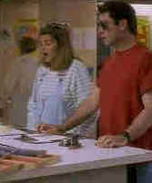

Look Who's Talking/C+,A- |
|
Columbia/1989/96m/ANA & WS
1.85,FS 1.33 |
The premise of a following a baby from its embryo
stage and being able to listen to its thoughts is fun, but it's stretched to the limit in
this cute situation comedy. The best moments are the earliest when the idea is freshest.
John Travolta is the cab driver who picks up a pregnant Kirstie
Alley and bulls his way through traffic to get her to the hospital on time to deliver the
loquacious baby. Cabby stands in for Daddy in an easy mistaken identity ploy and from
there the bond between the three characters is put together comfortably. Alley is her
usual frenetic self while the Travolta of a decade ago lacks the edge of appealing
maturity that makes his latest pictures so satisfying. Bruce Willis is cute as the voice
of the baby, delivering pithy life comments with obvious relish. George Segal has a good
time as Alley's philandering boy friend who uses his therapist as an excuse to play
around.

|
Special delivery.©Columbia |
Written and Directed by Amy Heckerling, who also directed Fast
Times at Ridgemont High, Look Who's Talking lacks the vitality of that earlier film.
The script lacks the punch of Cameron Crowe's work on Heckerling debut film.
A very easy-going DVD of this easy-going film. Bright colors are
saturated and tightly controlled. Images are very sharp. The high key photography makes
for great transfers. Look Who's Talking is encoded with Dolby Digital 2-channel
sound with plenty of snap.
|
The Feature
Archive has articles ranging from John
Ford to Blonde
Bimbos, The
Heistmasters, Akira
Kurosawa and Frank
Darabont.

Click on the image above to for a view of Hollywood's great
dance musicals. Astaire, Kelly, Rogers and more....
Check out the Movie
Poster Archive for
short bios and images of Susan Hayward, Kirk Douglas, Katharine
Hepburn and many more. This month's featured star is Clark
Gable.

Imaging Science Foundation promotes proper
standards in home theater viewing. ISF trained technicians offer
monitor calibration services to consumers. The difference in
a properly calibrated monitor can be astounding. Click on
the image to find an ISF member near you.
Home
Theater Reference Reviewing System

When you read a DVD review it's of utmost importance to know
what equipment is being used to evaluate quality. Click on the
projector to find out more.
HOT
LINKS
DVD
Verdict
They may be
judgmental, but that's the point, isn't it. Lots of DVD reviews
plus news and more
The
Home Theater Forum
Looking
for lively and helpful exchanges on home theater, DVD, movies.
Visit this friendly site and get a hardy welcome.
|